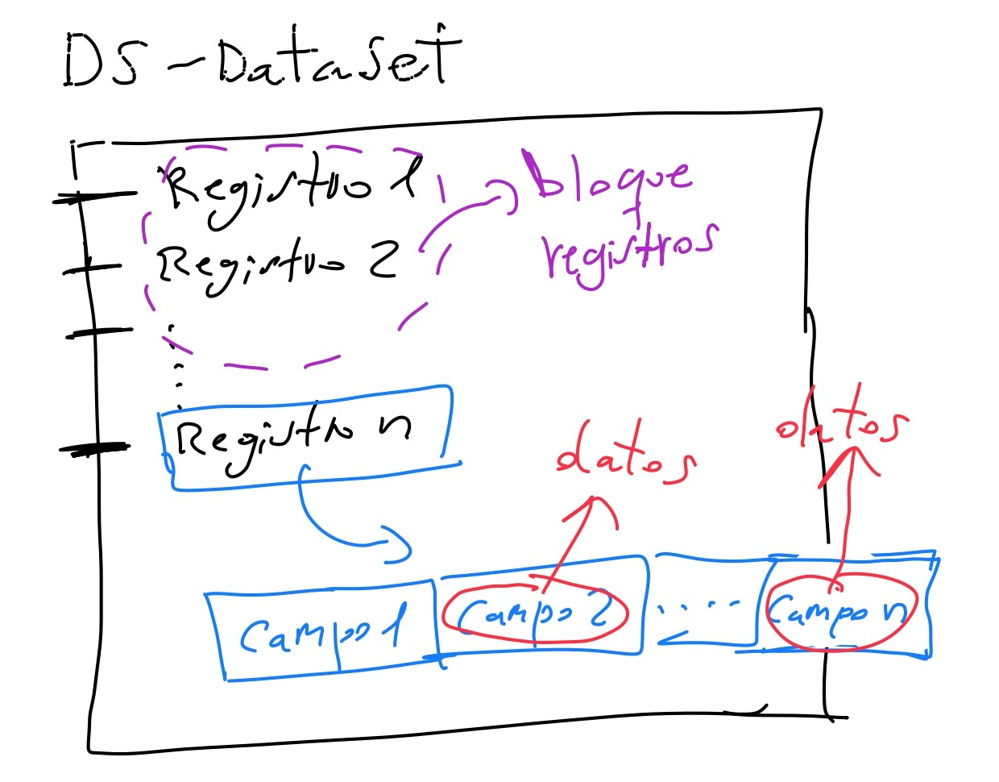
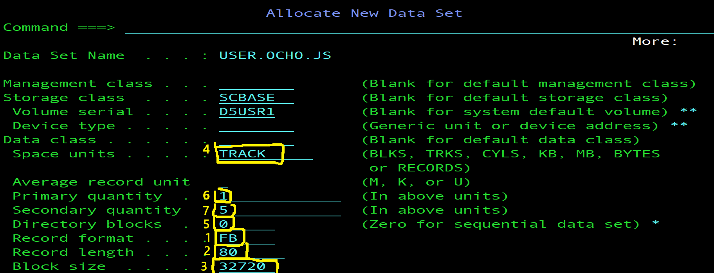
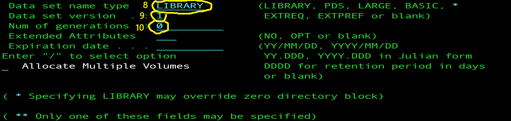
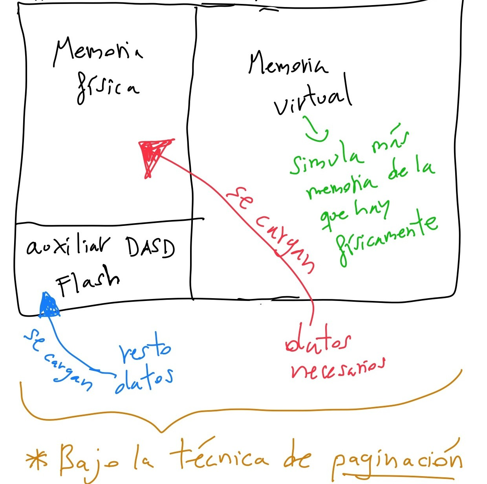
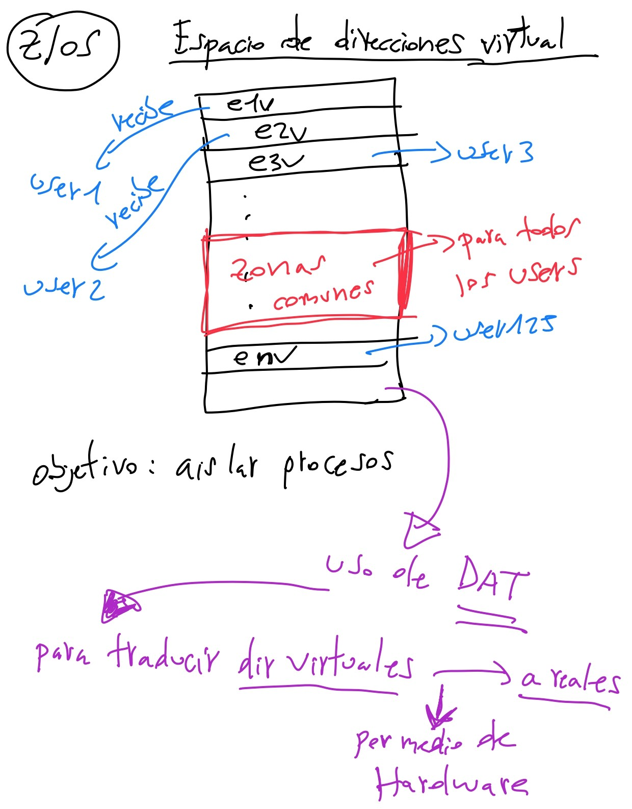

1.1. ¿Qué es un DataSet (DS)? => Es un conjunto de datos o fichero utilizado en z/OS para almacenar y gestionar datos.
Se compone de registros (PSWs) que estan divididos en campos y cada uno de ellos contiene datos, como caracteres. Cada carácter
se posiciona en un campo. Varios registros pueden formar bloques de registros. Un bloque es lo que se transfiere en cada operación de E/S.

1.2. Tipos de DataSets:
A) PS => Fichero secuencial => son registros almacenados uno tras otro, con acceso secuencial.
B) PDS => Fichero particionado => se compone de directorio y miembros, es decir, de ficheros dentro de una carpeta.
Cada miembro es un fichero secuencial. Si borras uno de ellos, su espacio se queda borrado y sin poder volver a utilizarse.
C) PDSE => Fichero particionado extendido => es una versión avanzada del PDS, reutilizando el espacio automáticamente,
permitiendo más extensiones y sin necesidad de compresión manual. Una diferencia importante con el PDS es que la parte de
los bloques de directorio máximo es No limit.
D) VSAM => Estructuras que actúan como método de acceso optimizado para almacenamiento en sistemas con memoria virtual.
Su objetivo es mejorar el rendimiento del acceso a datos de los ficheros PS. Para ello, usa técnicas de indexación,
acceso directo y almacenamiento eficiente. Cuenta con cuatro tipos:
- KSDS => usa una clave para acceso directo.
- LDS => mete datos en una base de datos de db2.
- ESDS => equivale a un secuencial, pero de VSAM.
- RRDS => accede eficientemente por número relativo de registro.
1.3. Métodos de acceso:
Definición => son técnicas para leer y escribir datos.
Hay dos tipos:
1. BSAM: es un método de acceso secuencial básico.
2. QSAM: es un método de acceso secuencial en cola.
1.4. Reglas en el nombre de un DataSet:
1. Es una estructura jerárquica, formada por segmentos, donde cada uno está separado por puntos y contiene caracteres.
2. Puede tener como máximo 22 segmentos en total.
3. Puede tener como máximo 44 caracteres en total, donde los últimos son de seguridad o extras.
4. Cada carácter es 1 bit.
5. El primer segmento es el HLQ o calificador de alto nivel.
- Ejemplo: USER.TEST.PRUEBA.SEQ
1.5. Tipos de formato de registro:
1. F - Fijo => son registros del mismo tamaño.
2. V - Variable => son registros de tamaño variable.
3. FB - Fijo Bloqueado => son registros del mismo tamaño agrupados en bloques.
4. VB - Variable Bloqueado => son registros de tamaño variable agrupados en bloques.
5. U - Indefinido => son registros sin estructura y usados en módulos ejecutables compilados.
1.6. Proceso de creación de un DataSet:


Caso PS:
1. El tipo de formato de registro => puede ser F, V, FB o VB.
2. La longitud del registro => 80
3. El tamaño del bloque => 32720
4. La cantidad primaria y secundaria de espacio => TRKS (tracks) / CYLS (cilindros)
5. Los bloques de directorio => 0
6. La cantidad primaria => 5-15 para TRKS / 1-3 para CYLS
7. La cantidad secundaria => 3-5 para TRKS / 1 para CYLS
8. El tipo de nombre del DataSet => < se deja en blanco >
9. La versión del DataSet => < se deja en blanco >
10. El número de generaciones => < se deja en blanco >
Caso PDS:
1. El tipo de formato de registro => puede ser F, V, FB o VB, salvo para ficheros .LOAD que debe ser U.
2. La longitud del registro => 80
3. El tamaño del bloque => 32720
4. La cantidad primaria y secundaria de espacio => TRKS (tracks) / CYLS (cilindros)
5. Los bloques de directorio => 20
6. La cantidad primaria => 5-15 para TRKS / 1-3 para CYLS
7. La cantidad secundaria => 3-5 para TRKS / 1 para CYLS
8. El tipo de nombre del DataSet => < se deja en blanco >
9. La versión del DataSet => < se deja en blanco >
10. El número de generaciones => < se deja en blanco >
Caso PDSE:
1. El tipo de formato de registro => puede ser F, V, FB o VB, salvo para ficheros .LOAD que debe ser U.
2. La longitud del registro => 80
3. El tamaño del bloque => 32720
4. La cantidad primaria y secundaria de espacio => TRKS (tracks) / CYLS (cilindros)
5. Los bloques de directorio => 0
6. La cantidad primaria => 5-15 para TRKS / 1-3 para CYLS
7. La cantidad secundaria => 3-5 para TRKS / 1 para CYLS
8. El tipo de nombre del DataSet => LIBRARY
9. La versión del DataSet => < se deja en blanco >
10. El número de generaciones => < se deja en blanco >
Caso GDG (datasets generacionales que pueden ser base o catalogados):
1. El tipo de formato de registro => puede ser F, V, FB o VB.
2. La longitud del registro => 80
3. El tamaño del bloque => 32720
4. La cantidad primaria y secundaria de espacio => TRKS (tracks) / CYLS (cilindros)
5. Los bloques de directorio => 0
6. La cantidad primaria => 5-15 para TRKS / 1-3 para CYLS
7. La cantidad secundaria => 3-5 para TRKS / 1 para CYLS
8. El tipo de nombre del DataSet => GENERATION
9. La versión del DataSet => 0
10. El número de generaciones => se gestiona al definir el grupo GDG base usando IDCAMS =>
generación tipo creada: ALLOC DS('MI.GDG.FILE(+1)') NEW ... => G0001V00
1.7. El almacenamiento de z/OS:

La
Paginación es un mecanismo de gestión de memoria virtual que,
permite al sistema operativo ejecutar programas que requieren de más memoria
de la que está físicamente disponible (Real Frame). Su funcionamiento consiste
en dividir, tanto el espacio de direcciones virtual, como la memoria física,
en bloques de tamaño fijo llamados
Páginas.
1.8. El Espacio de Direcciones Virtual y DAT:

DAT = sistema de traducción de direcciones dinámicas.
La trama de direcciones se compone de:
- 24 bits => MVS/Mainframe.
“La Línea”
- 31 bits => MVS-XA o MVS extendido.
“La Barra”
1.9. Backups o copias de seguridad de datos:
Pueden ser de tres tipos:
1. Volcado de datos (dump) => son copias completas del contenido de memoria o de los datasets.
2. Backups periódicos => son copias programadas para proteger datos críticos.
3. Recuperación ante desastre => es una copia integral en otro sistema o ubicación remota para continuidad operativa.
Hay dos tipos comunes de métodos de recuperación:
A) La restauración desde backup físico.
B) Las réplicas remotas y sincronización.
1.10. El formato CKD:
Es un sistema de organización en disco típico de los Z, donde cada registro contiene:
- Count => información de control del registro.
- Key => clave de búsqueda.
- Data => contenido del registro.
Es usado en DataSets VSAM, en ficheros secuenciales PS, en métodos de acceso y en sistemas como spool JES2/JES3 y registros SMF.
1.11. Localización de ficheros:
El sistema busca el fichero y al leerlo físicamente, lo traduce a nivel lógico para que se pueda procesar.
1.12. Medición del uso de un registro:
Es aproximadamente igual a la variabilidad del blocaje y sus diferentes tipos, de acuerdo con
los diferentes casos de longitud de registros que puede haber.
----------------------------------------------------------------------------------------------------------------------------
NOTA IMPORTANTE:
Una tecnología de almacenamiento físico de IBM Z es el formato tipo
RAID,
usado para organizar discos de forma redundante y eficiente, siendo la base de
que los
discos DASD sean rápidos, seguros y disponibles.
----------------------------------------------------------------------------------------------------------------------------